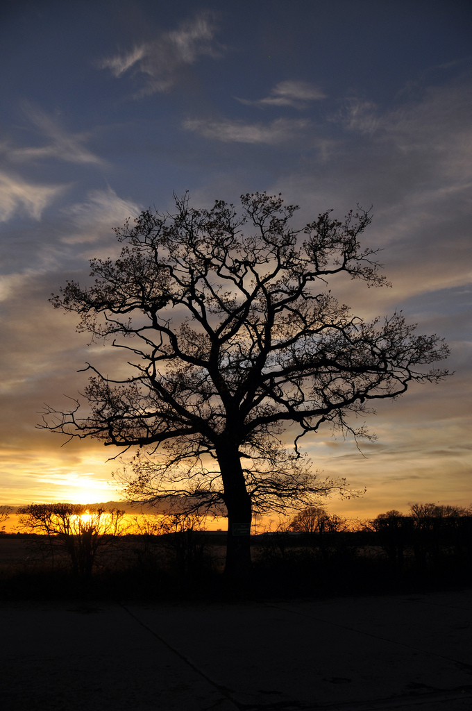

Gdyby nie był Pan takim desperatem
Wiosna roku 1913. Rilke wraca z Hiszpanii do Paryża, przygnębiony i zawiedziony w swych oczekiwaniach. Uświadomił sobie bowiem, że trzy niezapomniane przeżycia, jakich dostąpił poprzedniego roku w Duino, Wenecji oraz Toledo, przebrzmiały, „niczym jakowyś antrakt, fragment snu głębokiego na świeżym powietrzu”.
Księżna Marie von Thurn und Taxis próbuje go podnieść na duchu, choć trochę rozweselić. Pisze do niego wspaniały list, w którym wyznaje, iż uważa go za najszczęśliwszego człowieka na ziemi.
Jesteś Pan wielkim poetą i Pan dobrze o tym wiesz. Jesteś Pan zakochany (nie rezonować, Pan jest i był zawsze zakochany, w kim, kiedy i gdzie, to wszystko jedno). Posiadasz małe atelier w Paryżu — i jest właśnie marzec, cała ta przecudowna wiosna puka do Pańskich drzwi. — Proszę wejść! — Niechże Pan zawoła, Serafico!
W słowach skrzących się niezrównanym poczuciem humoru księżna wyznaje, że mimo wielu zmartwień i trosk, jakich w życiu zaznała, potrafi jednak obudzić w swym sercu radość.
Kwitnące drzewo owocowe, złoty promień słońca makes me wild with delight!
Zdobywa się także na niezapomniane, tchnące szczerością słowa:
Z drugiej jednak strony, gdyby Pan nie był takim desperatem, prawdopodobnie nie pisałby Pan tak cudownie.
I z rezygnacją dodaje:
A zatem niechże Pan już sobie będzie desperatem, wielkim desperatem, największym desperatem!
Czy rezygnacja, przygnębienie, melancholia są nieodłącznymi elementami niezwykłości, jaka nas spotyka? Czy niezapomniane przeżycia musimy okupić żalem i smutkiem przemijania? I dlaczego nad wiecznotrwałą zwyczajność zawsze przedkładamy ułudę chwili, która wciąż nam umyka?
Fragmenty listu księżnej Marie von Thurn und Taxis w przekładzie W. Markowskiej.